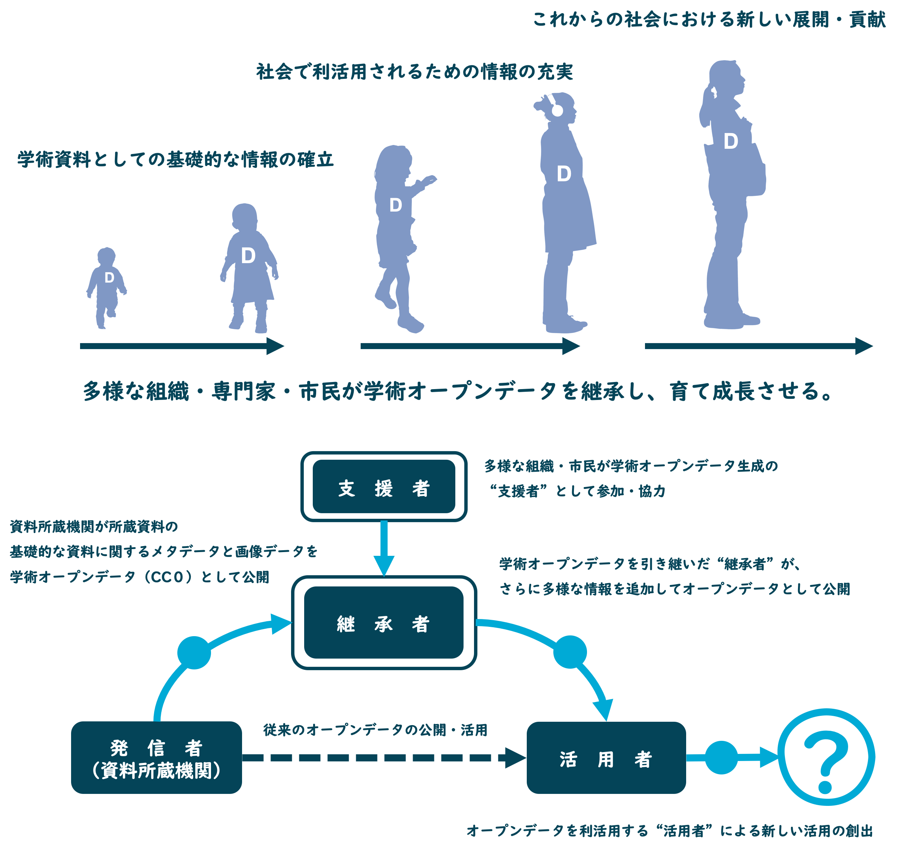

大阪市立図書館所蔵写真・絵はがき資料デジタルアーカイブ高精細画像の公開について (20210331)
令和2（2020）年12月、本プロジェクトの一環として、合同会社AMANEによる、大阪市立図書館所蔵写真・絵はがき等264点の画像の再撮影を行いました。高精細の画像に差し替えるとともに、264点のデータセットを公開しました。画像の一部では、IIIF(*)マニフェストURLを公開しています。
大阪市立図書館公開データセットはこちらからご覧いただけます。⇒「デジタルアーカイブ オープンデータセット」のページ
IIIF公開分については、こちらからご覧いただけます。⇒https://github.com/amane-project/me-glue-you
講演会「大阪市立図書館デジタルアーカイブと継承するオープンデータの可能性」の開催について
大阪市立図書館デジタルアーカイブは令和 2 年 1 月にリニューアルしました。本イベントでは、新機能や搭載されている オープンデータ画像とともに、新しいオープンデータの形である “継承型学術オープンデータ” についてご紹介します。社会におけるオープンデータの共有、デザイン・プロダクツ開発や事業化の可能性など、“オープンデータ公開のそれから” に ついて、参加者全員で考えます。
日時： 令和 2 年 2 月 12 日 ( 水 ) 14 時~16 時
場所： 大阪市立中央図書館 5 階中会議室 (大阪市西区北堀江 4-3-2)
登壇者 :
原嶋亮輔 (root design)
佐久間大輔 ( 大阪市立自然史博物館 )
阿児雄之 ( 東京国立博物館 )
堀井 洋 ・堀井美里 (合同会社 AMANE) 他
スケジュール：
14:00 ~ 14:30 大阪市立図書館デジタルアーカイブとオープンデータの紹介 (大阪市立中央図書館職員)
14:45 ~ 15:00 オープンデータ Me-Glue-You プロジェクトの紹介 (継承型学術オープンデータ製作委員会)
15:00 ~ 16:00 パネルディスカッション「継承するオープンデータの可能性」
主催: 大阪市立図書館 ・合同会社 AMANE・ 継承型学術オープンデータ製作委員会
*本イベントは、大阪市教育委員会・合同会社 AMANE による大阪市立図書館デジタルアーカイブオープンデータの公開及び利活用推進に関する連携協定に基づき実施します。
継承型学術オープンデータ製作委員会では、大阪市教育委員会と合同会社AMANEによる「大阪市立図書館デジタルアーカイブオープンデータの公開及び利活用推進に関する連携協定書」に基づき、大阪市立図書館所蔵資料の高精細オープンデータ製作・公開プロジェクトを実施します。本プロジェクトでは、同図書館所蔵「写真」「絵葉書」の高精細デジタル画像とメタデータをオープンデータとして生成・公開します。公開するオープンデータは広く社会での活用を期待するとともに、”継承型学術オープンデータ”として、国内外の組織・個人が引き継ぎ自由かつ豊かに発展させる、新しい学術オープンデータの実現・普及を目指します。
地域に現存する歴史資料・学術資料に関する情報を学術オープンデータとして公開し、それらを学術研究分野のみではなく社会において幅広く活用する様々な取り組みが近年行われています。資料情報がオープンデータという自由かつ柔軟な形式で共有されることにより、学術資料が有する価値や魅力の社会的な認識や理解が促進されることが期待されています。
従来の資料アーカイブ等で公開されている学術オープンデータの構成は、資料名や所蔵者・法量（寸法）・材質などの資料に関する基本情報と資料画像（低・中解像度）の組み合わせが基本であり、資料を所蔵する機関や組織が生成から公開までの全ての過程を担うことが一般的でした。しかしながら、利用者が活用するために必要な情報（メタデータ項目）が地理情報や内容に関するキーワード・多言語化などより複雑かつ意味的なものになっていることや、公開される資料画像も高解像度になっていることから、単一の機関が基礎的な資料情報から高度な活用を想定した情報の生成・公開を担うことは困難になっていることは明らかでした。
この課題に対して本プロジェクトでは、“継承型学術オープンデータ”を提案します。従来の学術オープデータの生成・公開を発展させ、広く社会のなかで学術オープンデータを継承する仕組みを構築することにより、１）基礎的な資料情報の生成、２）意味的なメタデータの生成、３）社会におけるアプリケーションの開発・利用、のそれぞれの過程を資料所蔵機関・オープンデータ継承者・オープンデータ利用者で分担・連携することを目指します（図１）。
さらに、生成されるデータの構成についても、メタデータ・高精細資料画像データと併せてオープンデータの継承に必要な事業概要情報（プロジェクトデータ）についても生成・公開します（図２）。メタデータの生成・追加に関する事業概要やそれに関わった人材に関する情報も記述することで、その後のオープンデータ継承を円滑に実現すると同時に、オープンデータ生成に携わった“継承者”の役割や専門性を明確に位置づけます。
広く社会において学術オープンデータを“巡らせる”ために、本プロジェクトでは企業や有識者など多様なメンバーで構成される「製作委員会」によるオープンデータ製作を行います（図３）。継承型学術オープンデータ製作委員会の役割は、データ仕様の検討・データ継承および活用の把握・事業資金の募集・運営管理などが挙げられます。所蔵機関やデジタルデータ作成企業から独立した、中立的な独立した立場から学術オープンデータ製作を実施することにより、継続的な事業の実現が可能となります。
本プロジェクトでは、大阪市立中央図書館所蔵の明治・大正期絵はがき・写真・引札資料を対象にした継承型学術オープンデータ化について、“継承者”および“支援者”を募集しています。
“継承者”の方へ：
本プロジェクトに関するお問い合わせは、以下のメールアドレスまでお願いします。